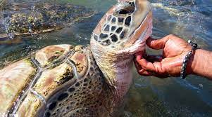
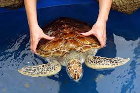
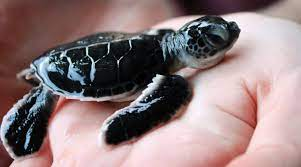
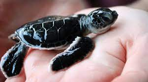
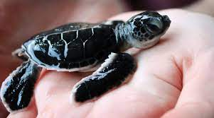

 


Sea Turtle Hatchery
Some people of Sri Lanka have dedicated their lives to animals around the Seas, and the Sea Turtle Hatchery is run by one such family. Every member is steadfast towards helping out the sea turtles who need medical help, or those who are pregnant.
In fact, they even help the sea turtles breed, and provide them with a safe environment to lay their eggs and care for them. The reason why it is one of the best places to visit in Galle is that, you will get to witness all of that at once during a short detour to this turtle abode.
Location: Sea Turtle Hatchery and Rescue Center A2, Hikkaduwa, Sri Lanka
Timings: 07.30 a.m. to 06.00 p.m.
Entry Fee: 500 Sri Lankan Rupees (USD 2.83)
Location: Sea Turtle Hatchery and Rescue Center A2, Hikkaduwa, Sri Lanka
Timings: 07.30 a.m. to 06.00 p.m.
Entry Fee: 500 Sri Lankan Rupees (USD 2.83)